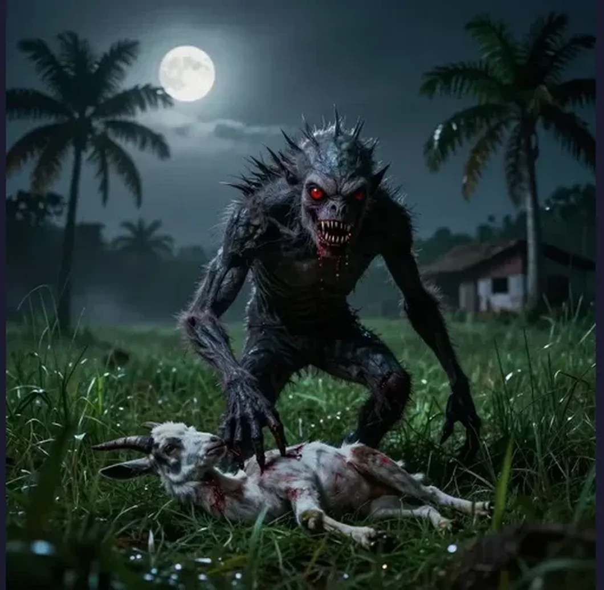

Chupacabra: The Blood-Sucking Beast That Terrorized Latin America and Became a Global Legend

The chupacabra — literally “goat sucker” in Spanish — burst onto the scene in 1995 Puerto Rico, killing livestock across Latin America and becoming one of the most famous cryptids in modern history.
It was March 1995 in Orocovis, a small town in Puerto Rico. A farmer went out to his sheep pen and found a strange sight. Eight of his sheep lay dead inside the fence. There was no sign of a struggle.
The animals had no torn flesh, and nothing was scattered around. A hungry animal would have left a mess. Instead, each sheep had only two or three small, round holes. Every drop of blood was gone.
Local officials first thought a cult had done it, in some kind of dark ritual. But the neat holes puzzled them. So did the lack of blood at the scene and the number of dead animals. Something had come and gone without leaving footprints or fur.
Within months, the same thing was happening all over Puerto Rico. Hundreds of goats, chickens, rabbits, dogs, and cows were found dead and drained of blood. Their bodies showed the same round marks.
Fear spread through the farming towns. Men with guns searched the hills at night. A mayor organized an official government hunt. And people gave a name to the creature that witnesses said they saw in the shadows: el chupacabras, which means “the goat sucker.”
Within a year, the legend had crossed the Caribbean to mainland Latin America. Then it reached the United States, and then the world. Now the chupacabra is one of the best-known cryptids on Earth. A cryptid is an animal that people report but science has not proved. Nobody has ever confirmed that the chupacabra exists. But its mark on popular culture is clear. Its story also tells us a lot about how people think, how the media works, and how much we love a good monster story.
The legend grew in a time of worry. In the mid-1990s, Puerto Rico was still dealing with the effects of Hurricane Hugo (1989) and a poor economy. The U.S. Navy presence on the island of Vieques was also a source of anger.
Strange stories were already in the air. The island had a rich tradition of folk tales about supernatural creatures. In 1975, animals in the town of Moca were found drained of blood. People called those events the “vampiro de Moca.” They had set a pattern. But nothing matched what began in the spring of 1995.
After the Orocovis attack, reports poured in from all over the island. The worst of it came in the town of Canóvanas. In September 1995, a woman named Madelyne Tolentino said she saw the creature up close.
She said it was three to four feet tall. It had large, glowing eyes, a round head, thin lips, and small holes for a nose. Spines ran along its back, and its skin was gray-green and looked like a reptile’s. It moved, she said, by hopping like a kangaroo.
Her story was shown on Puerto Rican television and radio. Her description became the standard picture of the chupacabra. It appeared in thousands of drawings, news stories, and witness reports in the years after.
The panic was real and widespread. In Canóvanas alone, more than 200 animal deaths were blamed on the creature within a few months. The mayor, José “Chemo” Soto, took an unusual step. He organized official hunts paid for by the government. Armed volunteers and animal control officers searched the hills around the town.
Soto said he would not rest until the creature was caught. He never found it. But news stories at home and around the world turned the chupacabra from a rural folk tale into a global story.
The word “chupacabra” means “goat sucker” in Spanish. It was not coined by a scared farmer or a scientist. It came from a Puerto Rican comedian and businessman named Silverio Pérez. In 1995, on a radio show, Pérez heard about the animal deaths and the blood-draining creature. On the spot, he invented the name chupacabras.
The word was catchy and easy to remember. It spread through Puerto Rican media within days. It became the name everyone used. Pérez was known mostly as a comedian and television star. He later said he had no idea the name would become so famous.
Within months, “chupacabra” appeared in English-language newspapers, in scientific journals, and in the Oxford English Dictionary’s list of new word entries.
One strange thing about the chupacabra is that witnesses in different places describe very different creatures. The original one from Puerto Rico is small and walks on two legs. It has spines, big eyes, and reptile-like skin, and people say it hops.
The chupacabra of Texas and Mexico is another animal altogether. It has four legs and looks like a hairless dog. Its skin is gray-blue, with prominent fangs and a thin, bony look. The two share almost nothing except a reputation for killing farm animals and draining their blood.
The first big sighting on the mainland came in 1996. Reports of attacks like the chupacabra’s came from the Miami, Florida area. Over the next few years, the creature was reported across Latin America. It was seen in Nicaragua, Argentina, and Brazil.
The biggest wave was in Chile. In 2000, sightings around the city of Calama led to patrols by the military and a national media frenzy. In each place the descriptions were different. Some witnesses described the two-legged creature from Puerto Rico. Others described something more like a dog. But it was in Texas that the chupacabra got its second, and probably more lasting, look.
In August 2004, a rancher named Devin McAnally shot a strange, hairless creature on his land near Elmendorf, Texas. It had been killing his chickens. The animal weighed about twenty pounds and had a severe overbite. Its skin was blue-gray and bare.
Experts at the San Antonio Zoo could not say for sure what it was. They guessed it might be a Mexican Hairless Dog. Then a DNA test at the University of California, Davis gave the answer. DNA is the code in every living thing that shows what it is.
The Elmendorf Beast was a coyote with a bad case of sarcoptic mange. Mange is a skin disease caused by tiny mites. It was not a cryptid or an alien or a new species. The strange look came from a terrible infestation of parasites.
The most famous Texas case came from Cuero, Texas, in 2007. Phylis Canion was a naturopathic doctor and lifelong hunter who had recently returned from Africa. She found several of her chickens dead. They seemed to be drained of blood through small wounds in the neck.
In June 2007, she saw a hairless, blue-gray creature like a dog slip through her fields in broad daylight. In the weeks that followed, more of her chickens were killed. In mid-July, a neighboring rancher called her. One of the creatures had been hit by a car near his land.
Canion took the body. Then two more turned up, also killed on the road. She kept one of them and sent samples for DNA testing. She was sure she had found the legendary chupacabra. She even put the preserved body on display in her living room.
The DNA results were clear. The Cuero chupacabra was a coyote-wolf hybrid with severe mange. This matched the Elmendorf findings. The “spines” that witnesses described were the bony ridge of the backbone on thin animals that had lost their fur.
Here is one of the most surprising twists in the history of cryptid research. Some researchers say the first Puerto Rican description was shaped by a Hollywood film. In June 1995, just months before the sightings in Canóvanas, the movie Species came out in theaters.
The film showed an alien-human creature named Sil, played by Natasha Henstridge in its creature form designed by effects artist Steve Johnson. Sil was described as walking on two legs, with large glowing eyes, a round head, and thin lips. Most striking of all, it had a row of spines down its back.
An investigator named Benjamin Radford spent five years studying the chupacabra. He found that the film was very popular in Puerto Rico in the summer of 1995. He also found that Madelyne Tolentino, the witness whose description set the standard, had seen the film before her sighting.
The likeness between Sil and the Puerto Rican chupacabra is striking. It is much closer than any likeness between the chupacabra and a real animal.
Radford wrote about this in his book Tracking the Chupacabra (2011). He suggests that Tolentino’s memory of the film’s creature may have shaped what she thought she saw. Or the many pictures of Sil may have prepared people across Puerto Rico to see a vague shape at night as the movie’s monster.
If he is right, then the Puerto Rican chupacabra, at least, is not a cryptid at all. It is a movie creation that walked off the screen and into the real world.
The scientific view of the Texas and Mexican chupacabra is clear. John Tomeček, Ph.D., is an associate professor at Texas A&M University who studies wildlife. He has given the fullest scientific explanation. In his view, the chupacabra is almost certainly a coyote in the late stage of sarcoptic mange.
Tiny mites burrow into the skin of the sick animal. This causes strong itching, loss of fur, sores, scabs, and thick skin. The signs match the chupacabra descriptions very well.
As the mites spread, the animal loses its fur in patches. In the end it is completely bare. Its skin thickens and turns gray-blue, almost like a reptile’s. The animal grows thin and desperate.
Tomeček noted something important. The last place a dog-like animal loses its fur is between the shoulder blades, in an area called the ruff. This leaves a raised ridge, like “spines,” along the back. That matches what witnesses described.
Mange also changes how an animal acts. Sick animals become desperate and confused. They may attack prey they would normally leave alone, including farm animals. A weak animal may kill chickens or goats and drink blood for food. That could explain the missing blood.
Radford spent five years looking into the chupacabra in a careful way. He traveled to Puerto Rico, Texas, and other places where it was seen. He interviewed witnesses and studied physical evidence.
His conclusion appeared in his book Tracking the Chupacabra: The Vampire Beast in Fact, Fiction, and Folklore (2011). Most sightings, he said, came from coyotes, wolves, and wild dogs with mange. People also mistook other animals for it, and old stories shaped what they saw.
Radford also found that the “blood draining” was often made bigger than it was. Predators often kill by biting the neck. The bite can look like puncture marks. The missing blood at the scene is often because it soaked into the ground, not because the animal was drained.
Many DNA tests have been done on supposed chupacabra bodies. Every one gave the same result: a known animal with mange. The 2004 Elmendorf Beast was confirmed as a coyote with sarcoptic mange by the University of California, Davis. Phylis Canion’s 2007 Cuero body was confirmed as a coyote-wolf hybrid with severe mange. Other bodies from Nicaragua and Texas gave the same answer.
No DNA of an unknown species has ever been found. The Texas A&M AgriLife extension has published official advice on this. It says that “chupacabra sightings” are almost certainly coyotes with mange. It also notes that the disease has spread as coyotes have moved into suburbs and cities.
Even so, the chupacabra will not go away. It has been in an episode of The X-Files (“El Mundo Gira,” 1997). It has also appeared in several episodes of Scooby-Doo, Destination Truth, and Fact or Faked: Paranormal Files, and in many documentaries and reality shows.
CNN, Fox News, and every big English and Spanish-language network have covered it. The chupacabra appears on T-shirts, coffee mugs, action figures, and hot sauce bottles. It shows up in songs, comic books, and video games.
In Latin America, it holds a place like that of the Loch Ness Monster in Scotland or Bigfoot in North America. It started as a local legend and became a world symbol of the unknown.
There is also money in the story. Towns in Puerto Rico, Texas, and Chile have used chupacabra tourism to bring in visitors. The town of Cuero, Texas, briefly became a media stop after Phylis Canion’s bodies made national news. Reporters and curious people drove out to see the preserved “chupacabra” in her living room.
In Puerto Rico, chupacabra tours, souvenirs, and themed attractions help the island’s tourism. As with other cryptid legends, there is a strong reason to keep the mystery alive. A proven chupacabra would be worth far less than one nobody can find.
So the chupacabra is almost certainly not real, at least not as one unknown species that drains the blood of farm animals on two continents. The DNA evidence is clear. Every body that was tested was a known animal. Usually it was a coyote or a coyote-wolf hybrid, made to look like a monster by mange.
The first Puerto Rican description may have come, perhaps strongly, from the creature in the film Species. That would be life copying the movies.
Yet the chupacabra story is real in a way that matters. It shows how fear, the media, and old stories can turn unclear experiences into shared certainty. It shows how a comedian’s joke can become a legend. A movie monster can walk off the screen and into the countryside. A sick coyote can become a vampire beast.
Was it only a film and a sick coyote? Or did the first farmer in Orocovis see something that nobody has found since? The chupacabra lives where evidence meets imagination, and there science rarely has the last word.
References & Further Reading
Wikipedia: Elmendorf Beast — The 2004 Texas specimen confirmed as a coyote with mange
Britannica: Chupacabra — Overview of the legend, origins, and cultural significance
Texas Observer: Chasing the Chupacabra — Detailed account of Phylis Canion’s Cuero, Texas specimens
Texas Standard: Cuero, Texas Chupacabra Sightings — History and analysis of Texas cryptid reports
📚 Recommended Reading: Cryptozoology A to Z by Loren Coleman (on Amazon) — As an Amazon Associate, we earn from qualifying purchases.
Editorial note: The chupacabra phenomenon is documented through hundreds of eyewitness reports, DNA analyses, veterinary pathology studies, and the work of investigators like Benjamin Radford. See our Editorial Policy.